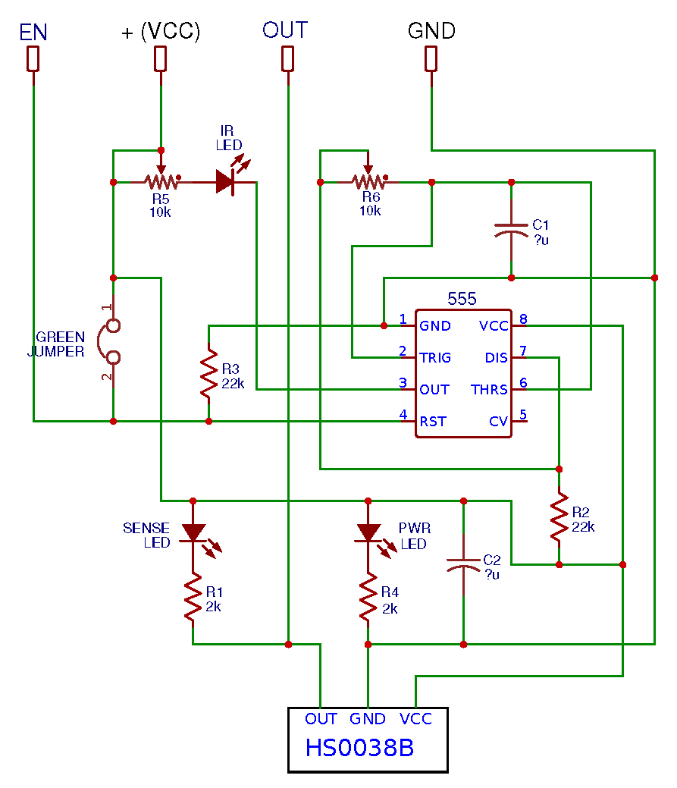

Фото модуля | Схема подключения
|
Краткое описание модуля “KY-018″— модуль содержит фоторезистор (датчик освещенности), который может применяться для измерения интенсивности света или определения его наличия/отсутствия. При отсутствии света сопротивление фоторезистора большое и доходит до 1 мОм, а при его освещении падает до нескольких Ом. Фоторезисторы – это полупроводниковые фоточувствительные устройства (сенсоры), которые имеют высокую чувствительность, быстрый отклик, устойчивые спектральные характеристики и широко применяются в видеокамерах, в садовых светильниках на солнечных батареях, датчиках освещенности, ночниках и других устройствах контроля освещения. | |
Код программы для подключения к Arduinoint sensorPin = 2; //define analog pin 2 int value = 0; void setup() { Serial.begin(9600); } void loop() { value = analogRead(sensorPin); Serial.println(value, DEC); // light intensity // high values for bright environment // low values for dark environment delay(100); } | |
Источники : | |

Датчик для избегания препятствий KY-032
Датчик вибрации
Фото модуля
Схема подключения | |
Краткое описание модуля “KY-032”– модуль представляет собой инфракрасный датчик обнаружения препятствий. Устройство имеет передатчик (IR LED), излучающий инфракрасный луч частотой 38 кГц, который принимается приемником (IR receiver) на плате. При приближении какого-либо предмета к сенсору (близость регулируется потенциометром) на выходе “OUT” появляется низкий уровень напряжения и включается светодиод на плате модуля. | |
Код программы для подключения к ArduinodigitalWrite( enablePin, HIGH); //Включить внутренний сигнал 38 кГц microDelay( 210); //Задержка 210µs(8 пульсов по 38kHz) if( digitalRead( outputPin)) //Если Output детектора равен HIGH { objectDetect = false; //Препятсвия не было найдено } else //Но если Output равен LOW, { microDelay( 395); //Опять ждать 15 пульсов if( digitalRead( outputPin)) //Если Output теперь равен HIGH { objectDetect = false; //Препятсвия не было найдено } else //Если Output до сих пор LOW { objectDetect = true; //Препятсвие било обнаружено } } digitalWrite( enablePin, LOW); //Выключить внутренний сигнал 38kHz |
|
Источники : | |

Фото модуля | Схема подключения
Краткое описание модуля “Датчик вибрации”Основной элемент датчика – металлическая пружина гибкой структуры, расположенная во внутренней части трубки из пластика. При наличии каких-либо воздействий на нее она начинает колебаться. Усиление сигнала происходит за счет его подачи сначала на операционный усилитель, а потом на выход аналогового типа. Важным элементом датчика вибрации является потенциометр, который регулирует чувствительность прибора, и позволяет устанавливать необходимый порог срабатывания. Датчик вибрации имеет три выхода: • Земля; • Питание; • Выход аналогового сигнала А0. Находящийся на плате потенциометр позволяет настроить его чувствительность. Он представляет собой переменный резистор c сопротивлением регулируемого типа. На плате датчика также присутствуют светодиоды, которые сигнализируют о наличии питания. Кроме того, некоторые разновидности оснащаются цифровым выводом D0, который выдает логический ноль при достижении порогового значения уровня вибрации. В состоянии покоя модуль находится в разомкнутом состоянии, и протекания тока по нему нет. При наличии внешних вибрационных воздействий за счет раскачивания пружины происходит кратковременное замыкание контактов. В результате происходит сработка датчика, и на выходе появляется логический 0. Срабатывание датчика происходит в независимости от его пространственного расположения. Технические параметры датчиков вибрации для Ардуино (могут отличаться в зависимости от модели устройства): • Питающее напряжение от 3 до 5 В; • Ток потребления 4-5мА; • С наличием или отсутствием цифрового выхода; • С наличием или отсутствием регулировки чувствительности. Датчики могут отличаться по весу и габаритам, но обязательно содержат монтажное отверстие для крепления к плате |
Код программы для подключения к Arduino#define PIN_LED 13 #define PIN_SENSOR 2 // Пин, ккотормоу присоединен датчик вибрации void setup() { pinMode(PIN_LED, OUTPUT); } void loop() { int val = digitalRead(PIN_SENSOR); // Считваем значение с датчика if(val==1){ digitalWrite(PIN_LED, HIGH); // Датчик сработад – включаем светодиод }else{ digitalWrite(PIN_LED, LOW); } } |
|
Источники : | |